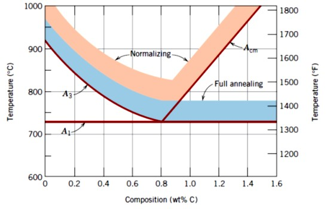
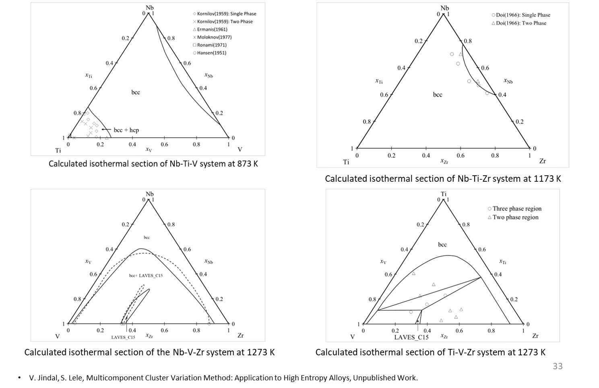
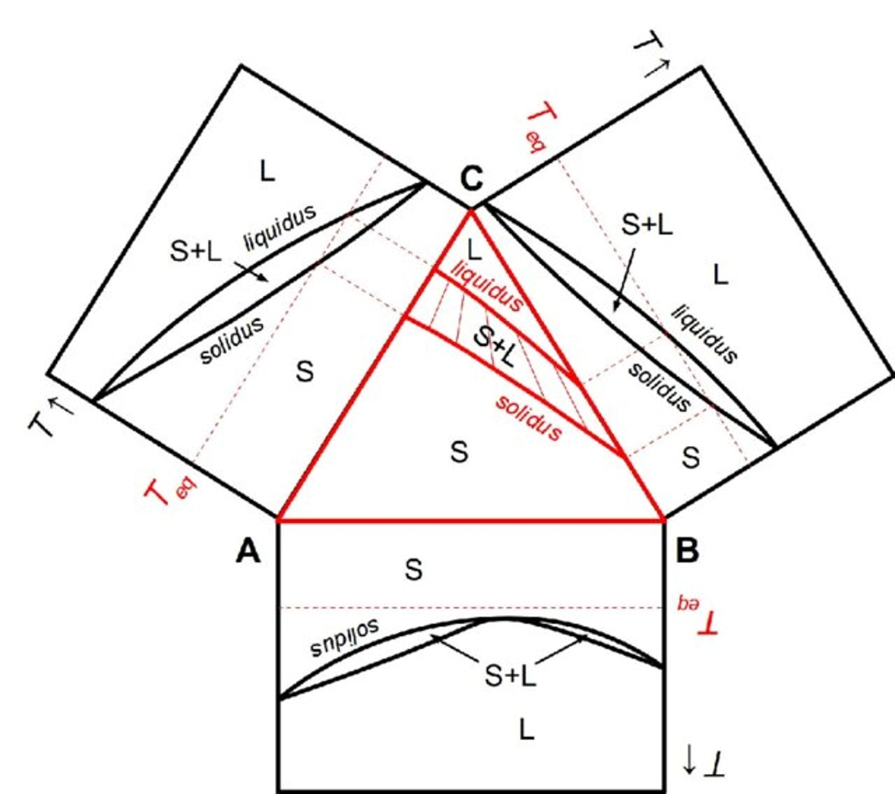

Research
The MML conducts advanced research in computational materials science, combining rigorous thermodynamic modelling with machine learning and experimental validation to design next-generation materials for defence, biomedical, and energy applications.
Computational Thermodynamics

Our core research focus is the development of accurate Gibbs energy models for solid crystalline metal phases, with particular emphasis on modelling short-range ordering (SRO) effects using the Cluster Variation Method (CVM) and Cluster Expansion (CE) methods. This work is a vital component of Integrated Computational Materials Engineering (ICME).
We develop algorithms for thermodynamic assessments and CE-CVM-based optimisation to predict phase diagrams and generate thermochemical databases for novel materials systems including Ti-B-Fe-Mo and Nb-Ti-V-Zr. See the Computational Thermodynamics page for full details.
Key publications: Multicomponent CVM for HEAs, Calphad (2025) • CE-CVM for Ti-X alloys, JPED (2022)
High Entropy Alloys

We investigate the thermodynamics of compositionally complex alloys (CCA) and high-entropy alloys (HEA), with a focus on short-range ordering, phase stability, and alloy design. Our multicomponent CVM framework enables accurate modelling of SRO in systems such as Nb-Ti-V-Zr.
Experimental work includes synthesis, heat treatment, and microstructural characterisation of refractory HEAs (MoNbTaTiW system), validated against DFT calculations and machine learning predictions.
Key publications: Hardness in refractory HEAs, Intermetallics (2026) • Neural network for SRO in NbTiVZr, JPED (2023)
Machine Learning in Materials Design

Recent work from the MML Group integrates machine learning with DFT and experimental data to predict materials properties in high-entropy alloys. A neural network model was developed to characterise the interplay between short-range ordering and enthalpy of mixing in the NbTiVZr system (J. Phase Equilibria Diffus., 2023). More recently, an ML+DFT approach was demonstrated for Vickers hardness prediction in refractory HEAs (MRS Communications, 2025; Intermetallics, 2026).
These efforts position the group at the intersection of traditional computational thermodynamics and modern data-driven materials science — a key attractor for the next generation of researchers.
Key publications: Data-driven hardness in HEAs, Intermetallics (2026) • ML+DFT for hardness, MRS Commun. (2025) • Data-driven CVM correlation functions, MSMSE (2022)
Ti-TiB Composites & Functionally Graded Materials

We design and characterise Ti-TiB composites and Functionally Graded Armour Composite Materials (FGACMs) for defence and biomedical applications. CALPHAD-guided processing routes — vacuum arc melting, spark plasma sintering (SPS), and hot pressing — are used to tailor microstructure and properties.
Funded by a DRDO–ARMREB grant (₹91.66 Lakhs, 2020–2023), this work produced significant advances in densification behaviour, fracture toughness, and tribological performance of Ti-TiB-Fe systems.
Key publications: Ti-TiB FGMs — fracture behavior, JMEP (2026) • Hot-pressing of Ti-TiB, JAMS (2024) • CALPHAD-guided TiB alloy design, Acta Mater. (2019)
Beta-Titanium Biomedical Alloys

Low-modulus beta-titanium alloys are ideal for dental and orthopaedic implants because their elastic modulus closely matches human bone, reducing stress-shielding. We use thermodynamic modelling (CALPHAD, DFT, CE-CVM) to design beta-Ti alloy compositions with optimal elastic properties and biocompatibility.
An ongoing IIT(BHU) Challenge Grant project (₹45 Lakhs, 2025–2027) is developing beta-Ti alloys for dental and orthopaedic applications, in collaboration with colleagues in the Department of Metallurgical Engineering.
Atomistic Simulations

Molecular dynamics (MD) and Monte Carlo (MC) simulations are employed to study phase transitions, dislocation evolution, and alloy thermodynamics at the atomic scale. Recent work has examined strain-rate and size effects on deformation and phase transformation in Mg single crystals, and Cu phase transitions under constrained compression.
These simulations complement our thermodynamic modelling and DFT work, providing mechanistic insight into materials behaviour that is difficult to access experimentally.
Key publications: Atomistic simulation of Cu, J. Mater. Sci. (2026) • Strain rate effects in Mg, JMEP (2026)
Funded Projects
Ongoing
- Development of Low Modulus Beta-Titanium Alloy for Dental and Orthopedic Implant Applications — IIT(BHU) Challenge Grant, ₹45 Lakhs (July 2025–March 2027). Co-PI.
- Molten Metal Electrolysis — An Alternate Route of Steelmaking — SRTMI–SAIL, New Delhi (June 2025–Present). Co-PI.
Completed
- Development of Functionally Graded Armor Composites (FGACs) Materials — DRDO–ARMREB, ₹91.66 Lakhs (2020–2023). Principal Investigator.
- Role of Short Range Ordering in Designing High Entropy Alloys — SERB Core Research Grant (CRG/2019/000430), ₹41.36 Lakhs (2019–2022). Principal Investigator.
- Development of Low-Cost β-Ti Alloy for Biomedical Applications — SERB Core Research Grant, ₹40.50 Lakhs (2020–2023). Co-PI.
- Phase-diagrams and thermodynamic investigations of Ti-Hf-Zr system using CVM — IIT(BHU) Seed Grant (2018–2020).
- Free Energy Minimisation in Binary Alloys via Genetic Algorithms — UGC XI-Plan Research Grant for New Faculty (2012).
Interested in Collaborating?
We welcome research collaborations and student applications. Visit our Openings page or contact us directly.
View Openings